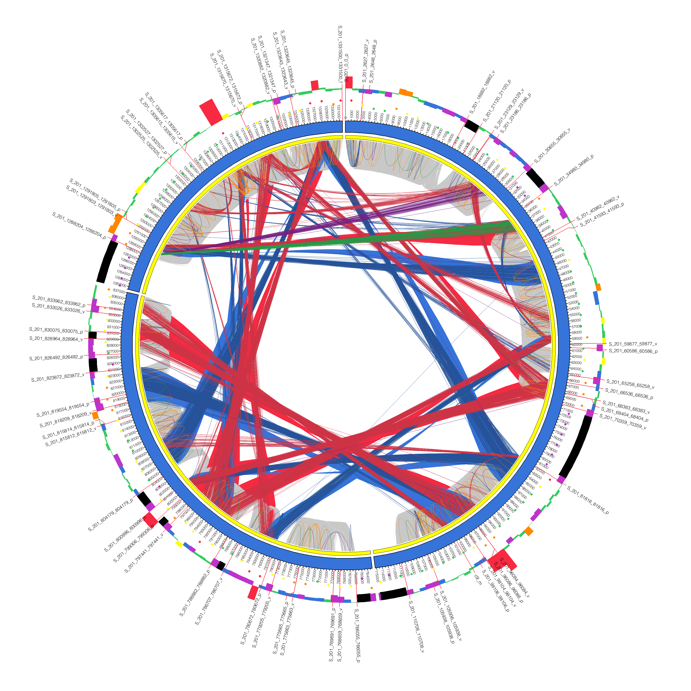
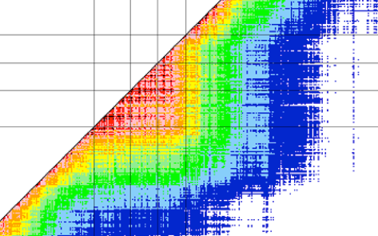

Welcome to plants-pathogens.usegalaxy.fr
South Green is a bioinformatics platform based on the Agropolis campus gathering Bioinformatics staff from CIRAD, IRD, INRAE and the Alliance Bioversity international-CIAT. Based on this strong local community in the field of agriculture, food, biodiversity and environment, this network of national and international scope, develops bioinformatics applications and resources dedicated to genetics and genomics of tropical and Mediterranean plants. South Green offers 3 types of services:
- Access to HPC infrastructures for calculation and storage with more than 400 analytical software
- Innovative open access scientific databases and tools
- A wide range of Bioinformatics Training at notional level and in the South
The objectives of South Green are:
- Provide services at the local, national and international level
- Promote the original tools from methods developed within the platform
- Propose a single web portal for access to the tools developed by the platform,
- Promote exchange and collaborative developments accross institutes
- Provide training for biologists and bioinformaticians,
- Ensure the maintenance and development, infrastructure and software applications via requests for funding in partnership,
- Ensure high quality process (e.g. certifications)

Structural variations
Scaffremodeler can be used to detect large structural variations between a reference sequence and a resequenced genome (Martin et al, 2016)

Mosaic genome reconstruction
TraceAncestor to analyze the mosaic structure of plant genomes (Oueslati et al., 2017 ; Ahmed et al., 2019)

SNP analysis
SNiPlay3 complete workflow: a package for exploration and large scale analyses of SNP polymorphisms (filtering, SNP density, diversity, linkagedisequilibrium) (Dereeper et al, 2015)

Gene families
Greenphyl / GenFam: comparative and functional genomics in plants (Rouard et al, 2011)

GWAS
SNiPlay3 GWAS workflow: Tassel-based GWAS workflow (GLM model) including population structure and correction for structure (Dereeper et al, 2015)

Chromosome reconstruction
Scaffrehunter tools assemble scaffolds into pseudomolecules using markers genotyped in a population (Martin et al, 2016)
Our partners :